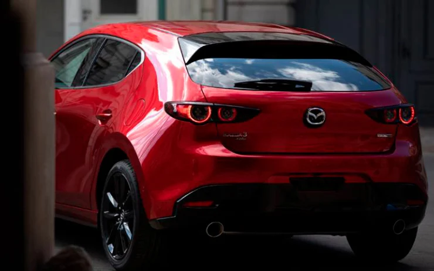
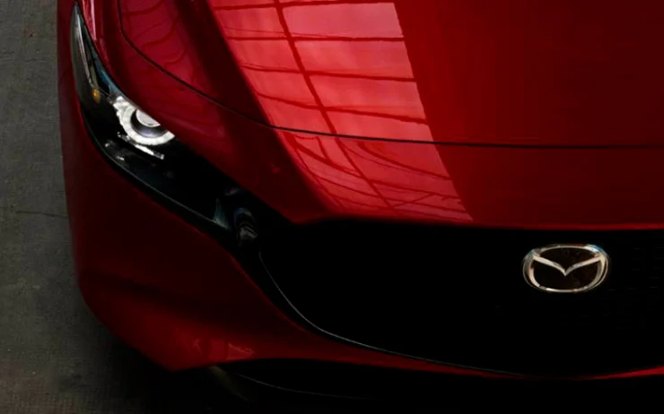
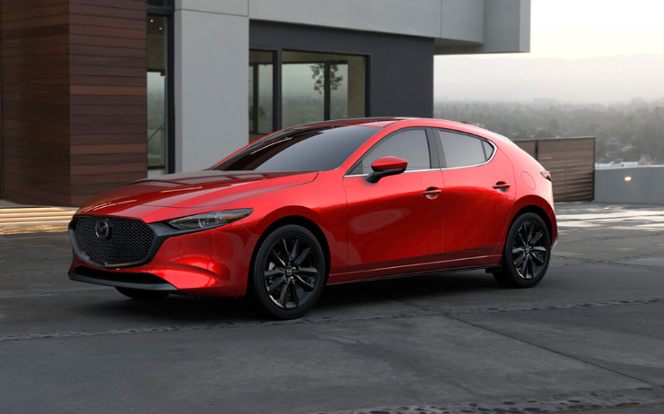
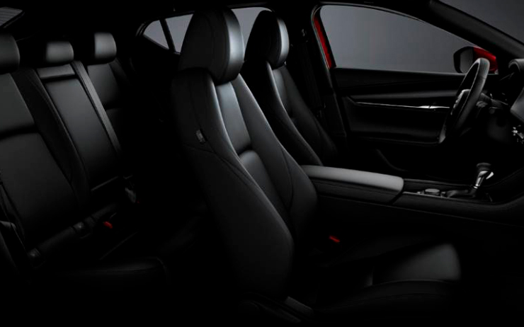
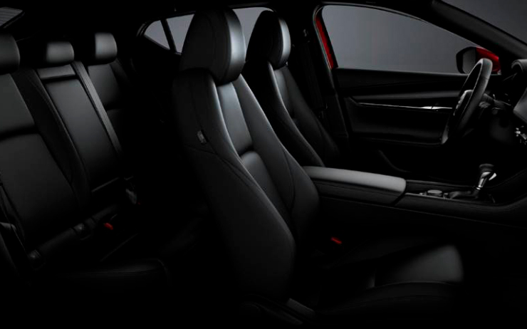
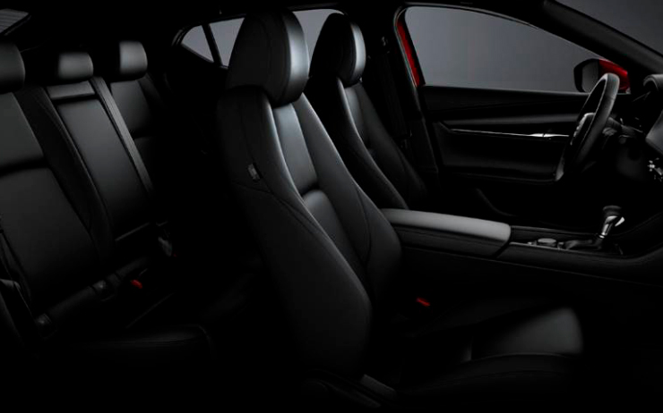
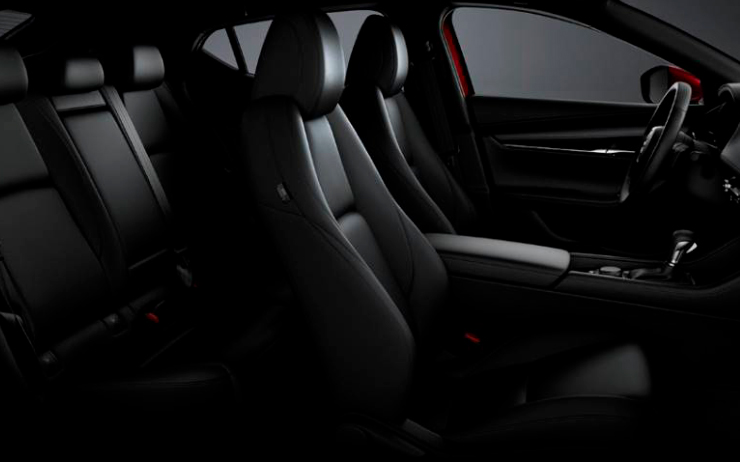

Galeria



 


Está claro que Mazda quiere ofrecer más que la inmensa mayoría de las marcas. Aunque el precio del compacto se inclina más hacia el lado generalista, la calidad de su interior apuesta claramente por el segmento premium. Una dedicada atención a los detalles y una correcta elección de materiales provoca que hablemos de uno de los mejores compactos del segmento, sin nada que envidiar a modelos superiores como el Mercedes Clase A o el Audi A3. Como ya es habitual en la marca japonesa, la gama de equipamientos se fractura en diferentes niveles. Paquetes muy cerrados donde hay pocas opciones de personalización más allá del color exterior y el tono de la tapicería. De menor a mayor dotación encontramos: Origin, Homura y Zenith. Las diferencias estéticas entre uno y otro son mínimas, centrándose toda la atención en el interior y, sobre todo, en la cantidad de elementos tecnológicos incluidos. En lo que a equipamiento se refiere, el Mazda 3 ofrece una amplia selección de sistemas y tecnologías. La lista es importante, y destacan elementos como: faros Full LED, acceso y arranque sin llave, sistema multimedia con pantalla táctil panorámica, conectividad para dispositivos móviles, climatizador, cámara de aparcamiento, techo solar y un completo equipo de asistentes a la seguridad y elementos de seguridad. Mazda siempre ha sido firme defensora de los motores «rightsizing», es decir motores de cilindrada óptima. Mientras que el resto de las marcas apostaban por reducir el tamaño de los bloques, los japoneses los incrementaban. Finalmente, el tiempo les ha dado la razón. Además de eso los japoneses han desarrollado la tecnología Skyactiv, bloques altamente eficientes con sistemas particulares y consumos propios de un coche diésel. Toda la gama del Mazda 3 se apoya en la gasolina, tanto el compacto como la carrocería sedán. La oferta está compuesta por dos bloques. Por un lado, la gama arranca con el Skyactiv-G. Se trata de un motor atmosférico de dos litros que genera 122 caballos y 213 Nm de par motor. Toda la fuerza se envía a las ruedas delanteras mediante la gestión de un cambio manual de seis velocidades o un automático de tipo convertidor de par. El más potente de la familia es el Mazda 3 Skyactiv-X. Un motor de última generación con tecnologías avanzadas que deriva del bloque anterior con cuatro cilindros y 1.998 centímetros cúbicos. En este caso la potencia se incrementa hasta los 186 caballos con 240 Nm de par motor. Esta unidad permite derivar la potencia al eje delantero o a las cuatro ruedas mediante un esquema de tracción total. Incorpora cajas de cambio manuales o automáticas.
